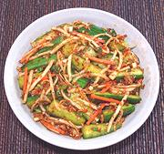

|
Cucumber Hot Spicy KimcheeKorea - Oi Kkaktugi | ||||
| Makes: Effort: Sched: DoAhead: |
2 # ** 45 min Yes |
This summer kimchee is light and cool and isn't nearly as chili hot as you might think. Korean flake is fairly mild. This kimchee can be chilled and served immediately, or kept refrigerated for a week or so. | |||
|
------ 1-1/2 3/4 4 2 1 ------ 5 1/3 2 2 1 3 ------ |
--- # oz oz oz oz --- cl in T T t T --- |
-- Vegetables Cucumber (1) Sea Salt (2) Daikon (3) Scallions Carrot -- Dressing Garlic Ginger Rice Porridge (4) Fish Sauce (5) Sugar Chili Flake (6) -------------- |
This recipe doesn't really qualify as "kimchi" because it's not fermented, but it's made so similarly that Koreans call it "kimchi". Make - (45 min - 20 min work)
|